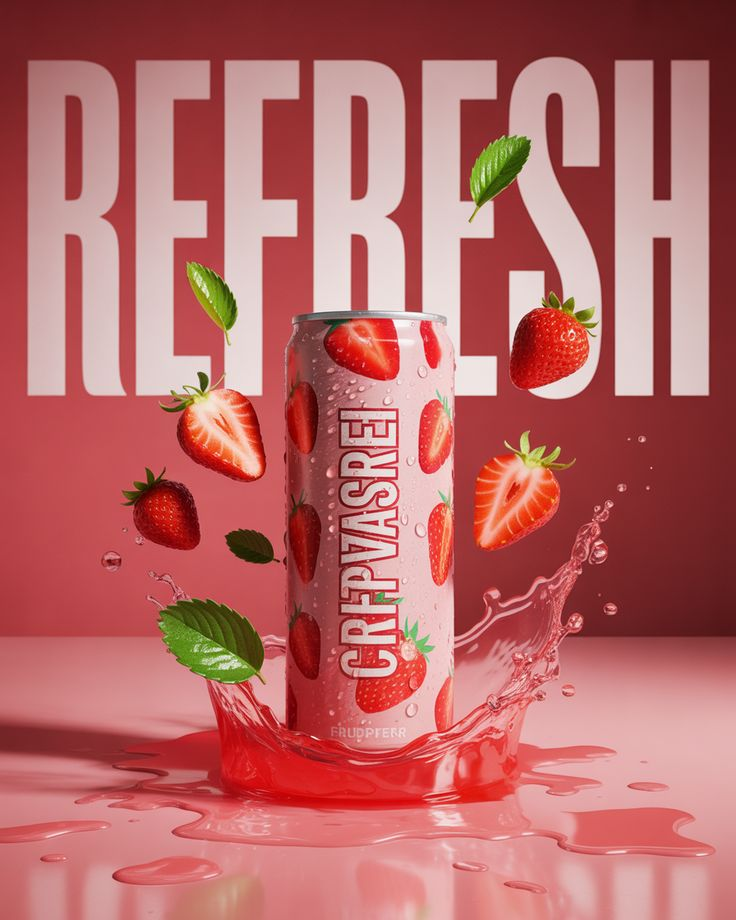

We are a
Design Agency

Introducing
Most coffee comes from two main types of beans: Arabica, known for its sweet and acidic flavors, and Robusta, which is stronger,more bitter, and contains more caffeine.

New
As seen in your image, combining coffee with textures like brown sugar brulee and boba pearls creates a "dessert-style" experience. Latte Art: Baristas use steamed milk to create intricate designs on the surface of lattes. Sustainability: A growing focus on "Fair Trade" to ensure farmers are paid fairly for their crops.